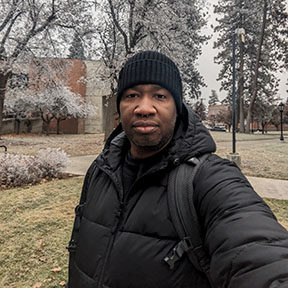

Andrew Cato 😅
Origin Story
I'm an naturalized immigrant to the US from Trinidad and Tobago. My family got to this country by winning green card lotteries under the Diversity Program offered by the Department of Immigration services. I joined the USAF in October of that same year as a 4C0 (Mental Health service) and am a 12 year Veteran. I moved to Seattle after I got promoted to civilian status, and have lived in WA state since 2014. I bounced around in school for a while before putting my head down, and am majoring in Technical Communication at EWU in Cheney. My career goal is to be a Techncial Writer, while writing fiction on the side for fun.
Super Power
I'm a really good cook...when the spirit moves me.
Weakness
Water I can't stand in. Thalassophobia is real!